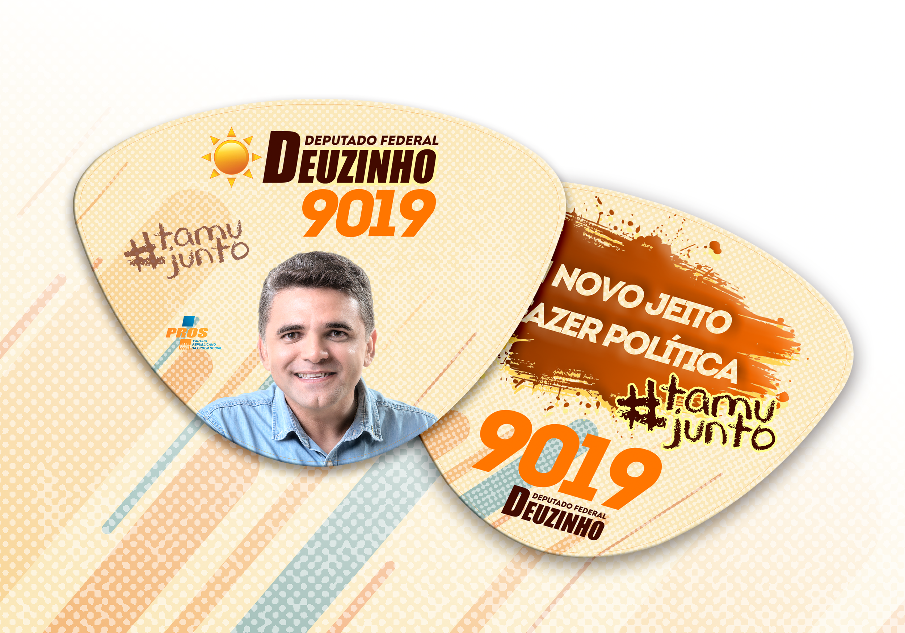
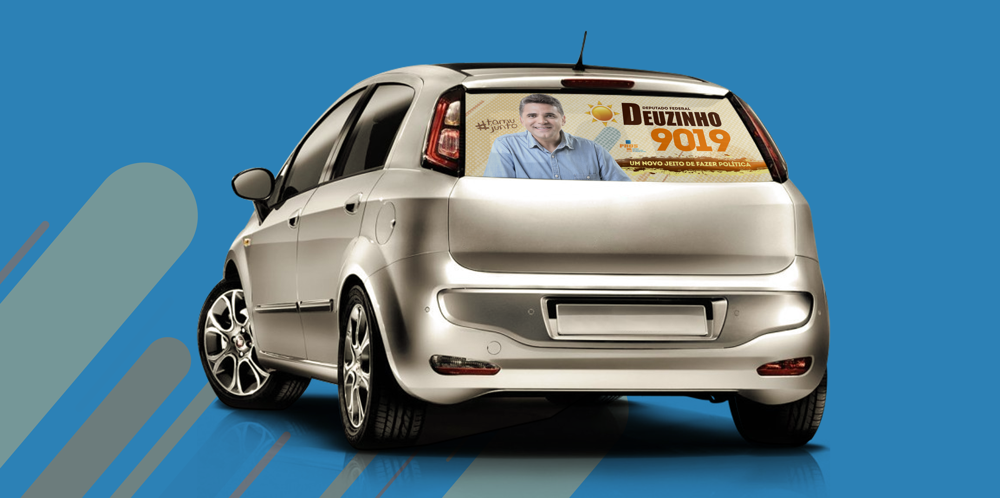
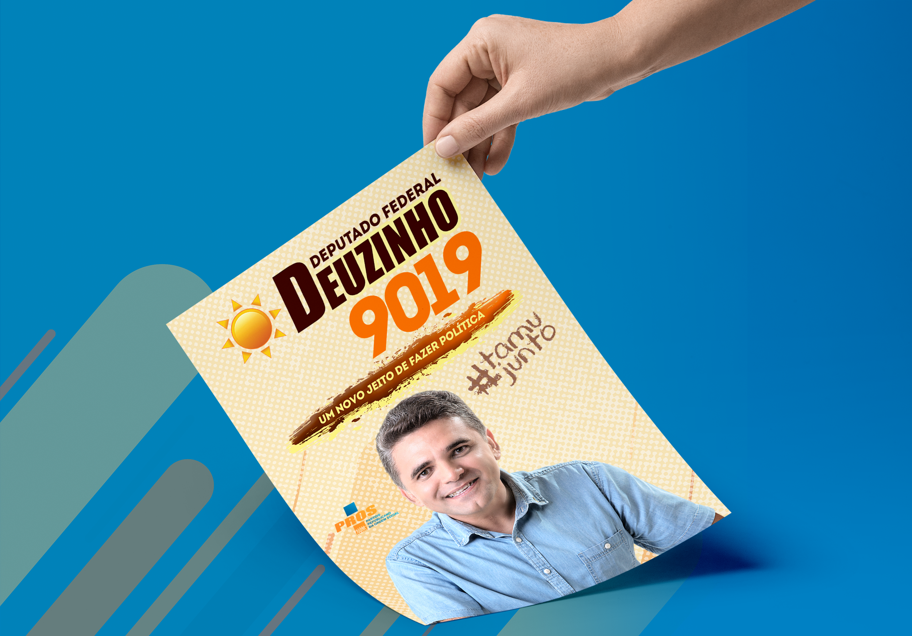
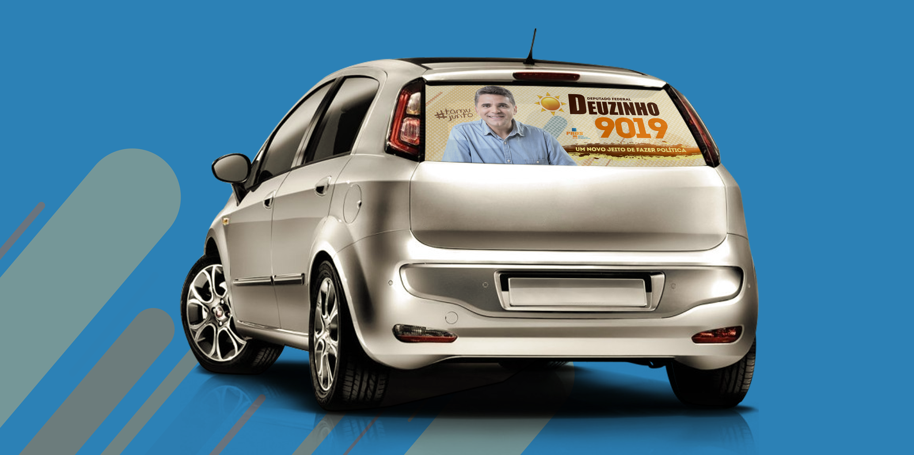
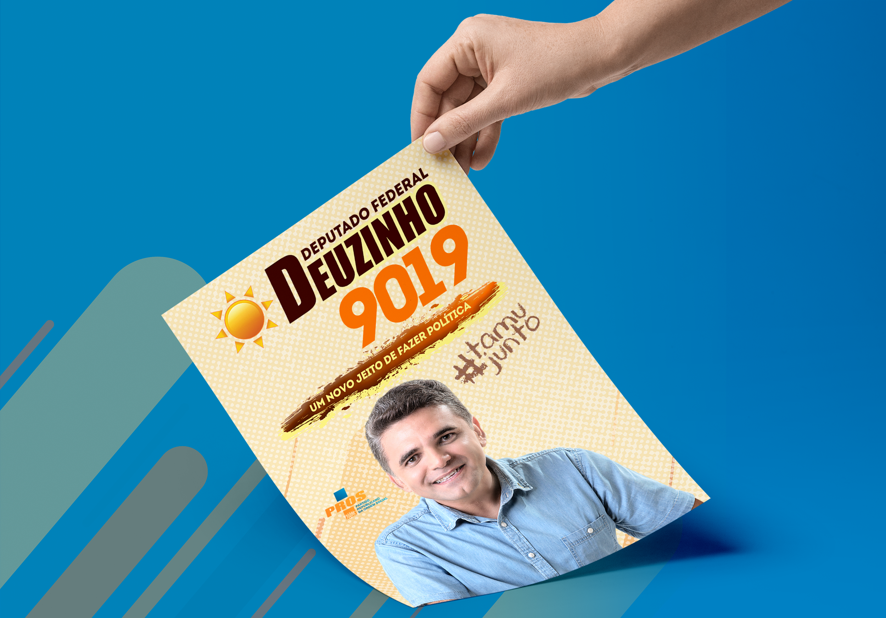

Criação de identidade visual para a campanha política do candidato do a Deputado Federal pelo PROS, Deuzinho Filho, na eleição de 2018. Deuzinho foi Vereador de Caucaia de 2000 à 2012, sendo o vereador mais votado de Caucaia nas eleições de 2008, Secretário de Patrimônio e Serviços Públicos de 2011 à 2014, Secretário de Saúde de 2014 à 2016, Presidente da União dos Vereadores do Ceará de 2005 à 2012, Diretor da União dos Vereadores do Brasil de 2006 à 2008 e longo de sua carreira exerceu vários cargos na câmara de deputados.

 


